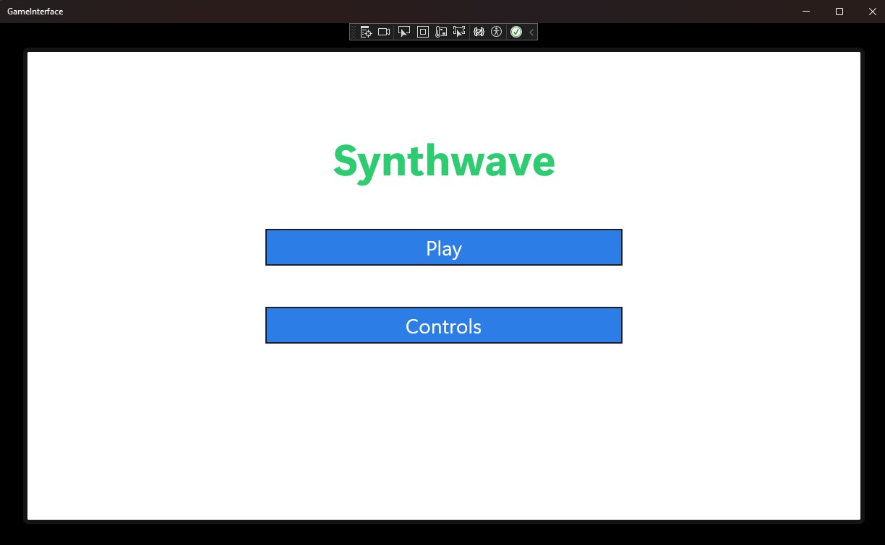
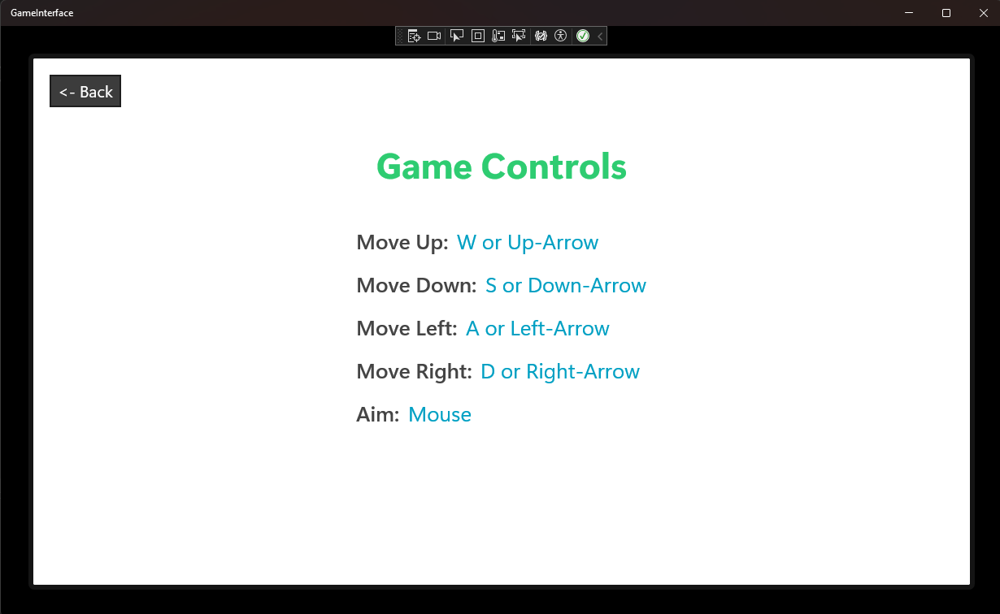
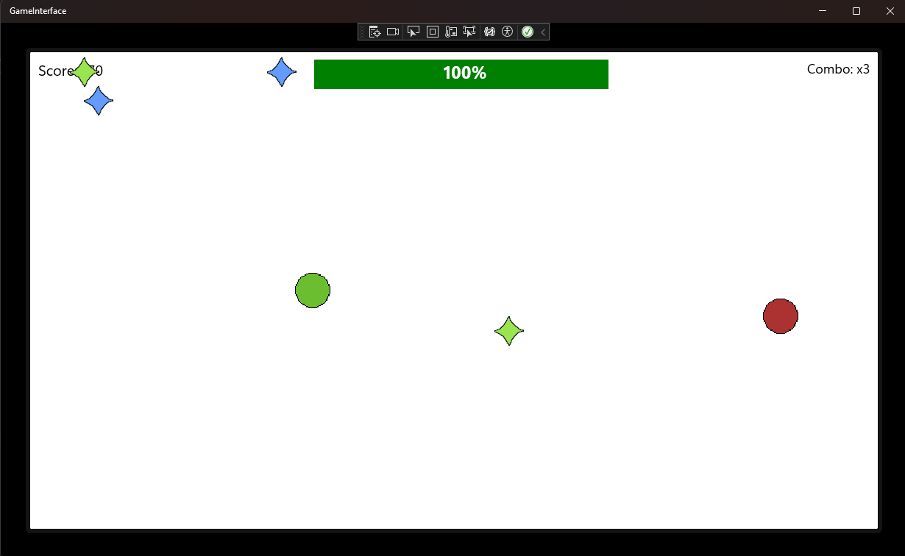
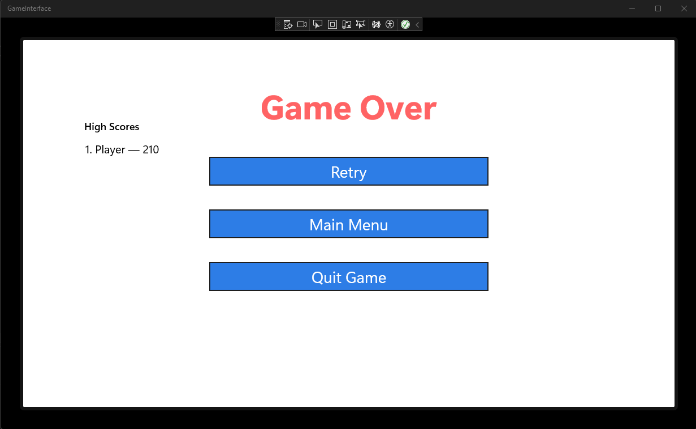

Synthwave




Summary
Synthwave is a wave survival game where you must survive and increase your score as enemies spawn more frequently. The main goal is to survive as long as possible and try to get a new high score each time.
Purpose
- Event handling
- Using dispatch timers
- Project organization, such as class separation
- Building XAML via C#
- Implementation of lists for managing game objects, sorting high scores, and filtering entries
- Data transfer objects such as: HighScore.cs, Collectible.cs, Projectile.cs, and GamePiece.cs
- Error handling
- Using File IO to store data locally